The purpose of this tutorial is to show how to use oomph-lib's Least Squares Commutator (LSC) Navier-Stokes preconditioner.
Theory
oomph-lib currently provides two types of (LBB-stable) Navier-Stokes elements: Taylor-Hood (Q2Q1) and Crouzeix-Raviart (Q2Q-1) elements. These contain two distinct types of degrees of freedom, namely the velocities and pressures.
The least-squares commutator (LSC; formerly BFBT) Navier-Stokes preconditioner employs oomph-lib's block-preconditioning framework to (formally) re-order the linear system to be solved during the Newton iteration into 2x2 blocks, corresponding to the velocity and pressure unknowns. We note that all velocity components are treated as a single block of unknowns. The linear system therefore has the following block structure
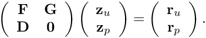
Here  is the momentum block,
is the momentum block,  the discrete gradient operator, and the discrete divergence operator. (For unstabilised elements, we have 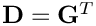 and in much of the literature the divergence matrix is denoted by
the discrete gradient operator, and the discrete divergence operator. (For unstabilised elements, we have 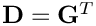 and in much of the literature the divergence matrix is denoted by  .)
.)
An "exact" preconditioner would solve this system exactly and thus ensure the convergence of any iterative linear solver in a single iteration. However, the application of such a preconditioner would, of course, be exactly as expensive as a direct solve. The LSC/BFBT preconditioner replaces the exact Jacobian by a block-triangular approximation
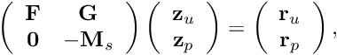
where 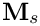 is an approximation to the pressure Schur-complement This system can be solved in two steps:
- Solve the second row for 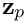 via
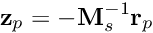
- Given
 , solve the first row for 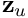 via
, solve the first row for 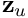 via 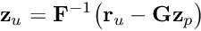
In the LSC/BFBT preconditioner, the action of the inverse pressure Schur complement
is approximated by
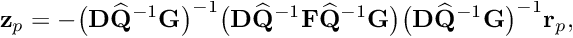
where 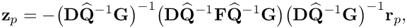 is the diagonal of the velocity mass matrix. The evaluation of this expression involves two linear solves involving the matrix
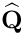
which has the character of a matrix arising from the discretisation of a Poisson problem on the pressure space. We also have to evaluate matrix-vector products with the matrix
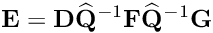
Details of the theory can be found in "Finite Elements and Fast Iterative Solvers with Applications in Incompressible Fluid Dynamics" by Howard C. Elman, David J. Silvester, and Andrew J. Wathen, published by Oxford University Press, 2006.
In our implementation of the preconditioner, the linear systems can either be solved "exactly", using SuperLU (in its incarnation as an exact preconditioner; this is the default) or by any other Preconditioner (interpreted as an "inexact solver") specified via the access functions
or
An example
To demonstrate how to use the preconditioner, here are the relevant extracts from the driver code driven_cavity.cc – a straightforward modification of the code for driven-cavity problem discussed elsewhere. As explained in the Linear Solvers Tutorial switching to an iterative linear solver is typically performed in the Problem constructor and involves a few straightforward steps:
- Create an instance of the IterativeLinearSolver and pass it to the Problem
In our problem, we chooseGMRESas the linear solver:
// Create oomph-lib iterative linear solverSolver_pt=new GMRES<CRDoubleMatrix>;// Set linear solverlinear_solver_pt() = Solver_pt;
- Create an instance of the Preconditioner and pass it to the IterativeLinearSolver
// Set preconditionerPrec_pt=new NavierStokesSchurComplementPreconditioner(this);Prec_pt->set_navier_stokes_mesh(this->mesh_pt());Solver_pt->preconditioner_pt()=Prec_pt;
Customise the Preconditioner (if required)
The behaviour of many preconditioners can be fine-tuned for specific applications. TheNavierStokesLSCPreconditionerprovides the option to perform the linear solves involving the and matrices with inexact solvers (i.e. other preconditioners), rather than with the "exact preconditioner"
matrices with inexact solvers (i.e. other preconditioners), rather than with the "exact preconditioner" SuperLUPreconditioner. Since the matrix has the character of a pressure Poisson matrix, it may be solved efficiently with algebraic multigrid (AMG) – at least for elements that employ a continuous pressure approximation; see Further comments and exercises. In these cases an efficient inexact solver is obtained by performing just a single multigrid cycle.
Assuming thatHypreis available, we therefore provide the option to use theHypreAMG solver to solve the linear systems involving the matrix.
#ifdef OOMPH_HAS_HYPRE//=============================================================================/// helper method for the block diagonal F block preconditioner to allow/// hypre to be used for as a subsidiary block preconditioner//=============================================================================namespace Hypre_Subsidiary_Preconditioner_Helper{Preconditioner* set_hypre_preconditioner(){return new HyprePreconditioner;
We set the various solver flags to values that are appropriate for 2D Poisson problems. This is most easily done by calling a helper function, defined in the namespaceHypre_default_settings:
// Set parameters for use as preconditioner on Poisson-type problemHypre_default_settings::set_defaults_for_2D_poisson_problem(static_cast<HyprePreconditioner*>(P_matrix_preconditioner_pt));
Next we specify thePreconditioneras the inexact solver for the matrix,
// Use Hypre for the Schur complement blockPrec_pt->set_p_preconditioner(P_matrix_preconditioner_pt);
and suppress the on-screen output from Hypre.
// Shut up!static_cast<HyprePreconditioner*>(P_matrix_preconditioner_pt)->disable_doc_time();}
For modest Reynolds numbers, performing a single multigrid cycle also provides a good approximate solver for linear systems involving the momentum block, 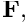 so we repeat the steps just listed, using the solver flags assigned in another helper function in the namespaceHypre_default_settings:
F_matrix_preconditioner_pt = new HyprePreconditioner;// Shut up!static_cast<HyprePreconditioner*>(F_matrix_preconditioner_pt)->disable_doc_time();// Set parameters for use as preconditioner in for momentum// block in Navier-Stokes problemHypre_default_settings::set_defaults_for_navier_stokes_momentum_block(static_cast<HyprePreconditioner*>(F_matrix_preconditioner_pt));// Use Hypre for momentum blockPrec_pt->set_f_preconditioner(F_matrix_preconditioner_pt);The driver code contains various other preconditioning options which you should explore yourself.
Further comments and exercises
Use the driver code demo_drivers/linear_solvers/driven_cavity.cc to explore the behaviour of the preconditioner for the driven cavity problem. The driver code uses command line flags to specify various solver/preconditioner combinations.
- Show that for Taylor-Hood (Q2Q1) elements, the preconditioner performs extremely well, i.e. the solve time increases approximately linearly with the number of degrees of freedom.
- Show that for Crouzeix-Raviart (Q2Q-1) elements, the use of the AMG solver for the pressure Schur complement block leads to a very poor performance.
- Examine iteration numbers and CPU times for various problem sizes and show that for Taylor-Hood (Q2Q1) elements, the preconditioner leads to near-optimal behaviour in the sense that the CPU times increase approximately linearly with the number of unknowns. Determine the "break-even" point in the CPU times for the solution by direct and iterative solvers. Hint: You may wish to use the shell script time_driven_cavity.bash to perform the parameter studies.
For your reference, here are a few timings (total time in seconds for the Newton solver) obtained from runs at a Reynolds number of 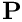 on various uniformly refined meshes. The first column in the tables shows the total number of degrees of freedom; the subsequent columns show the solve times for different solver/preconditioner combinations. For instance, GMRES [SuperLU,AMG] means that the linear systems were solved using the LSC preconditioner with an exact solve for the momentum block and an approximate AMG solve (a single multigrid cycle) for the pressure Schur complement block. All runs were performed with full optimisation (-O6) on an Intel Xeon 3.6GHz processor.
| # of dofs | SuperLU | GMRES [SuperLU,SuperLU] | GMRES [SuperLU,AMG] | GMRES [AMG,SuperLU] | GMRES [AMG,AMG] |
|---|---|---|---|---|---|
| 842 | 0.38 | 0.51 | 0.52 | 0.93 | 0.91 |
| 3482 | 2.32 | 2.56 | 2.28 | 3.15 | 3.04 |
| 7922 | 9.24 | 6.34 | 6.3 | 7.54 | 7.41 |
| 14162 | 15.71 | 18.06 | 17.84 | 13.8 | 13.46 |
| 22202 | 36.88 | 28.46 | 27.21 | 23.26 | 23.29 |
| 32042 | 62.29 | 37.27 | 36.26 | 29.38 | 25.84 |
| 43682 | 108.97 | 66.26 | 57.7 | 41.71 | 37.6 |
| # of dofs | SuperLU | GMRES [SuperLU,SuperLU] | GMRES [SuperLU,AMG] | GMRES [AMG,SuperLU] | GMRES [AMG,AMG] |
|---|---|---|---|---|---|
| 1021 | 0.29 | 0.51 | 0.72 | 0.72 | 0.99 |
| 4241 | 1.82 | 2.79 | 4.83 | 3.62 | 7.03 |
| 9661 | 7.06 | 8.06 | 20.43 | 9.64 | 27.33 |
| 17281 | 20.79 | 19.62 | 67.62 | 20.15 | 87.39 |
| 27101 | 55.43 | 44.34 | 169.8 | 46.04 | 227.11 |
| 39121 | 93.75 | 64.02 | 277.29 | 39.73 | 314.25 |
| 53341 | 108.96 | 78.27 | 521.00 | 60.02 | 596.27 |
Source files for this tutorial
- The source files for this tutorial are located in the directory:
demo_drivers/linear_solvers/
- The driver code is:
demo_drivers/linear_solvers/driven_cavity.cc
PDF file
A pdf version of this document is available.